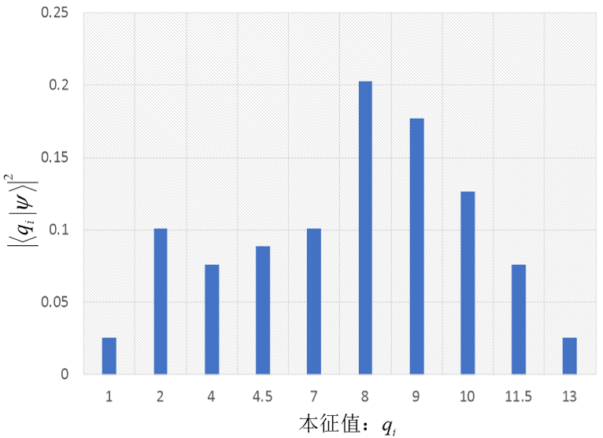
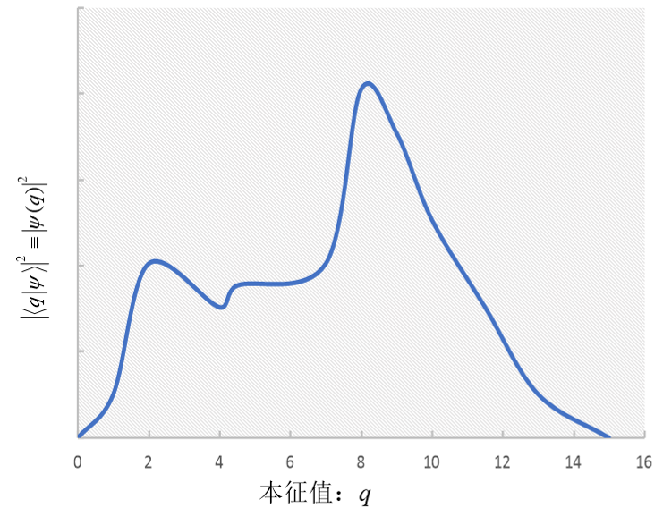
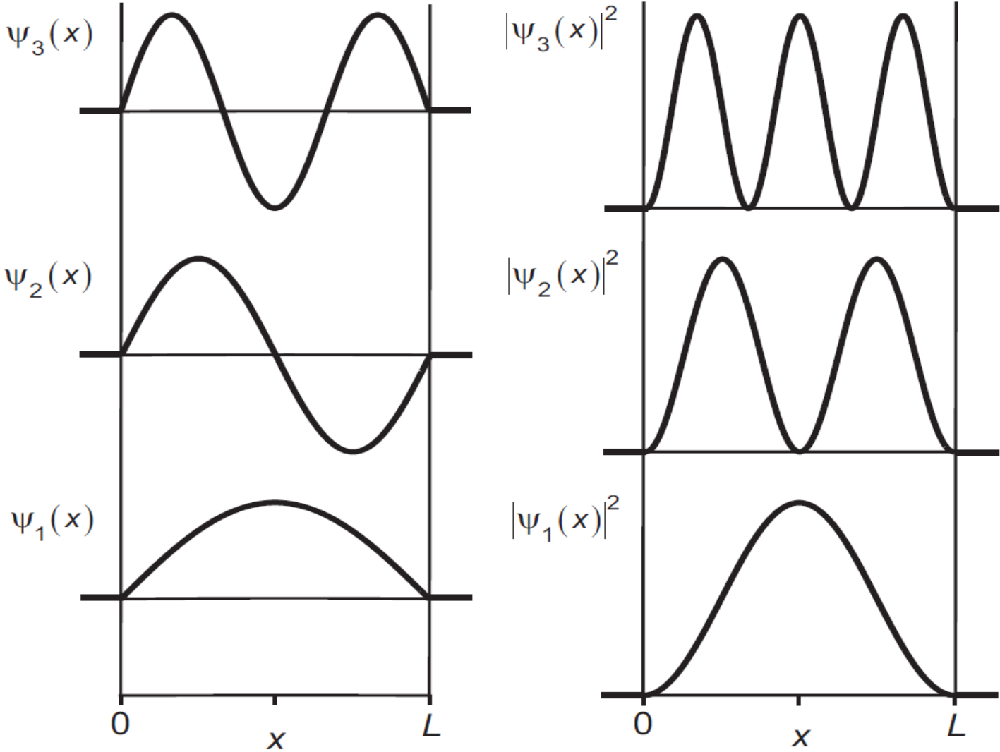
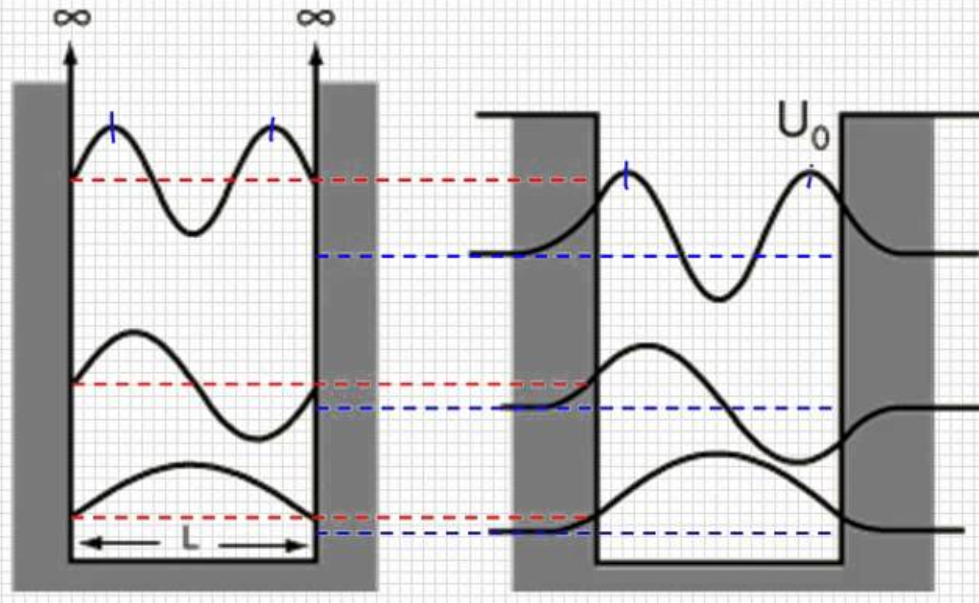
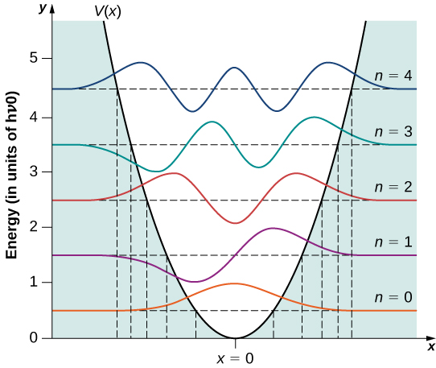

7 Continuous Observables
So far, our observables have discrete eigenvalues. Their eigenbases define discrete representations. We now consider observables with continuous eigenvalues and the continuous representations they define, developing their properties by comparison. Unless stated otherwise, integrals extend from negative to positive infinity.
7.1 The Dirac delta function
Introduce the Dirac \(\delta\) function \(\delta (x - x')\), where \(x\) is a real variable and \(x'\) a real parameter. It is defined by
\[ \delta \left( {x - x'} \right) = \left\{ {\begin{array}{*{20}{c}} {\infty ,}&{x = x'}\\ {0,}&{x \ne x'} \end{array}} \right. \tag{7.1}\]
\[ \int_{ - \infty }^\infty {\delta \left( {x - x'} \right)dx} = 1 \tag{7.2}\]
The \(\delta\) function has the properties
\[ \delta \left( {x - x'} \right) = \delta \left( {x' - x} \right) \tag{7.3}\]
\[ \delta \left( {x - x'} \right)F\left( x \right) = \delta \left( {x - x'} \right)F\left( {x'} \right) \tag{7.4}\]
\[ \int {dx\;\delta \left( {x - x'} \right)F\left( x \right)} = F\left( {x'} \right) \tag{7.5}\]
Equation Equation 7.5 may itself be used to define the \(\delta\) function.
A Fourier expansion expresses a function \(F\left( x \right)\) in terms of \(\exp \left( {ikx} \right)\):
\[ F\left( x \right) = \frac{1}{{\sqrt {2\pi } }}\int\limits_{{\rm{ - }}\infty }^{{\rm{ + }}\infty } {dk\;\widetilde F\left( k \right)\exp \left( {ikx} \right)} \tag{7.6}\]
The coefficients \(\widetilde F\left( k \right)\) are
\[ \widetilde F\left( k \right) = \frac{1}{{\sqrt {2\pi } }}\int\limits_{{\rm{ - }}\infty }^\infty {dx\;F\left( x \right)\exp \left( { - ikx} \right)} \tag{7.7}\]
Functions \(F\left( x \right)\) and \(\widetilde F\left( k \right)\) are Fourier transforms of each other. Equations Equation 7.6 and Equation 7.7 give
\[ \begin{array}{c} F\left( {x'} \right) = \frac{1}{{\sqrt {2\pi } }}\int {dk\;\widetilde F\left( k \right)\exp \left( {ikx'} \right)} \\ = \frac{1}{{\sqrt {2\pi } }}\int {dk\;\left[ {\frac{1}{{\sqrt {2\pi } }}\int\limits_{{\rm{ - }}\infty }^\infty {dx\;F\left( x \right)\exp \left( { - ikx} \right)} } \right]\exp \left( {ikx'} \right)} \\ = \int {dx\left\{ {\frac{1}{{2\pi }}\int {dk\exp \left[ {ik\left( {x' - x} \right)} \right]} } \right\}F\left( x \right)} \\ = \int {dx\left\{ {\frac{1}{{2\pi }}\int {dk\exp \left[ {ik\left( {x - x'} \right)} \right]} } \right\}F\left( x \right)} \end{array} \tag{7.8}\]
Comparing Equation 7.8 with the defining identity Equation 7.5 gives
\[ \delta \left( {x - x'} \right) = \frac{1}{{2\pi }}\int_{ - \infty }^\infty {dk\exp \left[ {ik\left( {x - x'} \right)} \right]} \tag{7.9}\]
\[ \delta \left( x \right) = \frac{1}{{2\pi }}\int_{ - \infty }^\infty {dk\exp \left( {ikx} \right)} = \frac{1}{{\sqrt {2\pi } }}\int_{ - \infty }^\infty {dk\frac{1}{{\sqrt {2\pi } }}\exp \left( {ikx} \right)} \tag{7.10}\]
This is the Fourier representation of the \(\delta\) function. Comparing Equation 7.10 and Equation 7.6, \(\delta (x)\) and \({1 \mathord{\left/ {\vphantom {1 {\sqrt {2\pi } }}} \right. \kern-1.2pt } {\sqrt {2\pi } }}\) form a Fourier-transform pair.
7.2 Continuous representations and wavefunctions
We extend the discrete formalism to continuous observables. For discrete eigenvalues of \(\hat Q\), use integer-indexed quantities \({q_i}\). For continuous eigenvalues of \(\hat Q\), use a continuous variable \(q,q',q''...\).


Figure 7.1. Left: \({\left\vert {\langle {{q_i}}\vert \psi\rangle } \right\vert ^2}\) is a probability in a discrete representation. Right: \({\left\vert {\langle q\vert \psi\rangle } \right\vert ^2}\) is a probability density in a continuous representation.
For a discrete observable \(\hat Q\), state \(\left\vert \psi \right\rangle\) has the expansion in the \(\hat Q\) representation
\[ \left\vert \psi \right\rangle = \sum\limits_i {\left\vert {{q_i}} \right\rangle \left\langle {{{q_i}}} \mathrel{\left \vert {\vphantom {{{q_i}} \psi }} \right. \kern-1.2pt } {\psi } \right\rangle } \tag{7.11}\]
The probability amplitude \(\langle {{q_i}}\vert \psi\rangle\) is a discrete function of \({q_i}\). Its squared magnitude \({\left\vert {\left\langle {{{q_i}}} \mathrel{\left \vert {\vphantom {{{q_i}} \psi }} \right. \kern-1.2pt } {\psi } \right\rangle } \right\vert ^2}\) is the probability that \(\hat Q\) has value \({q}_{i}\) in state \(\left\vert \psi \right\rangle\). Probability conservation requires
\[ \sum\limits_i {{{\left\vert {\left\langle {{{q_i}}} \mathrel{\left \vert {\vphantom {{{q_i}} \psi }} \right. \kern-1.2pt } {\psi } \right\rangle } \right\vert }^2}} = 1 \tag{7.12}\]
For a continuous observable \(\hat Q\), \(\left\langle {q} \mathrel{\left \vert {\vphantom {q \psi }} \right. \kern-1.2pt } {\psi } \right\rangle\) becomes a continuous function of \(q\), written
\[ \left\langle {q} \mathrel{\left \vert {\vphantom {q \psi }} \right. \kern-1.2pt } {\psi } \right\rangle \equiv \psi \left( q \right) \tag{7.13}\]
This is a wavefunction, although it need not describe an ordinary wave. It depends on the representation: \(\psi \left( q \right)\) is state \(\left\vert \psi \right\rangle\) in the \(\hat Q\) representation. As Figure 7.1 illustrates, \({\left\vert {\psi (q)} \right\vert ^2}\) is continuous in \(q\), so the sum in Equation 7.12 becomes an integral:
\[ \int {dq} {\left\vert {\psi (q)} \right\vert ^2} = 1 \tag{7.14}\]
Thus \(dq{\left\vert {\psi (q)} \right\vert ^2}\) is the probability that \(\hat Q\) lies in \(q\~q + dq\) in state \(\left\vert \psi \right\rangle\). The quantity \({\left\vert {\psi (q)} \right\vert ^2}\) is the probability density near \(q\) for \(\hat Q\) in state \(\left\vert \psi \right\rangle\), with dimensions \({1 \mathord{\left/ {\vphantom {1 q}} \right. \kern-1.2pt } q}\).
To ensure unique, normalized probabilities, the physically admissible wavefunctions \(\psi (q)\) considered here satisfy three conditions:
Single-valued: apart from an overall phase, each \(q\) has a unique value \(\psi (q)\).
Continuous everywhere.
Vanishing at infinity: \(\psi (q = \pm \infty ) = 0\).
Normalization and probability conservation Equation 7.14 give, for any state \(\vert \psi \rangle\),
\[ \left\langle {\psi } \mathrel{\left \vert {\vphantom {\psi \psi }} \right. \kern-1.2pt } {\psi } \right\rangle = 1 = \int {dq} {\left\vert {\left\langle {q} \mathrel{\left \vert {\vphantom {q \psi }} \right. \kern-1.2pt } {\psi } \right\rangle } \right\vert ^2} = \int {dq\left\langle {\psi } \mathrel{\left \vert {\vphantom {\psi q}} \right. \kern-1.2pt } {q} \right\rangle \left\langle {q} \mathrel{\left \vert {\vphantom {q \psi }} \right. \kern-1.2pt } {\psi } \right\rangle } = \left\langle \psi \right\vert \left( {\int {dq\left\vert q \right\rangle \left\langle q \right\vert } } \right)\left\vert \psi \right\rangle \tag{7.15}\]
Hence the continuous completeness relation is
\[ \int {dq\;\left\vert q \right\rangle \left\langle q \right\vert } = \hat I \tag{7.16}\]
Completeness gives the following results.
The expansion of an arbitrary state \(\left\vert \psi \right\rangle\) is
\[ \left\vert \psi \right\rangle = \int {dq\left\vert q \right\rangle \left\langle {q} \mathrel{\left \vert {\vphantom {q \psi }} \right. \kern-1.2pt } {\psi } \right\rangle } = \int {dq\;\psi (q)\left\vert q \right\rangle } \tag{7.17}\]
The inner product of two states is
\[ \left\langle {\phi } \mathrel{\left \vert {\vphantom {\phi \psi }} \right. \kern-1.2pt } {\psi } \right\rangle = \int {dq\left\langle {\phi } \mathrel{\left \vert {\vphantom {\phi q}} \right. \kern-1.2pt } {q} \right\rangle \left\langle {q} \mathrel{\left \vert {\vphantom {q \psi }} \right. \kern-1.2pt } {\psi } \right\rangle } = \int {{\phi ^*}\left( q \right)\psi \left( q \right)dq} \tag{7.18}\]
Take the inner product of Equation 7.17 with eigenstate \(\vert {q'}\rangle\) of \(\hat Q\), belonging to eigenvalue \(q'\):
\[ \psi (q') = \int {dq\;\psi (q)\left\langle {{q'}} \mathrel{\left \vert {\vphantom {{q'} q}} \right. \kern-1.2pt } {q} \right\rangle } \tag{7.19}\]
Comparison with the \(\delta\)-function definition Equation 7.5 gives
\[ \left\langle {{q'}} \mathrel{\left \vert {\vphantom {{q'} q}} \right. \kern-1.2pt } {q} \right\rangle = \delta (q - q') = \delta (q' - q) = \left\langle {q} \mathrel{\left \vert {\vphantom {q {q'}}} \right. \kern-1.2pt } {{q'}} \right\rangle \tag{7.20}\]
Thus the state with definite value \(q'\) of continuous observable \(\hat Q\) has wavefunction \(\delta (q - q')\) in its own representation.
Table 7.1 compares the corresponding formulas in discrete and continuous representations.
Table 7.1. Expansions in discrete and continuous representations.
| Discrete representation | Continuous representation | |
|---|---|---|
| Eigenvalue equation | \(\hat Q\left\vert {{q_i}} \right\rangle = {q_i}\left\vert {{q_i}} \right\rangle\) | \(\hat Q\left\vert q \right\rangle = q\left\vert q \right\rangle\) |
| Relations between basis vectors | \(\left\langle {{{q_i}}} \mathrel{\left \vert {\vphantom {{{q_i}} {{q_j}}}} \right. \kern-1.2pt } {{{q_j}}} \right\rangle = {\delta _{ij}}\) | \(\left\langle {q} \mathrel{\left \vert {\vphantom {q {q'}}} \right. \kern-1.2pt } {{q'}} \right\rangle = \delta \left( {q - q'} \right)\) |
| State expansion | \(\left\vert \psi \right\rangle = \sum\limits_i {\left\vert {{q_i}} \right\rangle \left\langle {{{q_i}}} \mathrel{\left \vert {\vphantom {{{q_i}} \psi }} \right. \kern-1.2pt } {\psi } \right\rangle }\) | \(\left\vert \psi \right\rangle = \int {dq\left\vert q \right\rangle \left\langle {q} \mathrel{\left \vert {\vphantom {q \psi }} \right. \kern-1.2pt } {\psi } \right\rangle } = \int {dq\;\psi (q)\left\vert q \right\rangle }\) |
| State in the chosen basis | Column of probability amplitudes \(\left( {\begin{array}{*{20}{c}} \vdots \\ {\left\langle {{{q_i}}} \mathrel{\left \vert {\vphantom {{{q_i}} \psi }} \right. \kern-1.2pt } {\psi } \right\rangle }\\ \vdots \end{array}} \right)\) | Wavefunction (probability-density amplitude) \(\left\langle {q} \mathrel{\left \vert {\vphantom {q \psi }} \right. \kern-1.2pt } {\psi } \right\rangle \equiv \psi {\rm{(}}q)\) Single-valued, continuous, \(\psi (q = \pm \infty ) = 0\) |
| Measurement probability | \({\left\vert {\left\langle {{{q_i}}} \mathrel{\left \vert {\vphantom {{{q_i}} \psi }} \right. \kern-1.2pt } {\psi } \right\rangle } \right\vert ^2}\): probability of value \({q_i}\) | \({\left\vert {\psi (q)} \right\vert ^2}dq\): probability of a value in \(q\~q + dq\) |
| Probability conservation | \(\sum\limits_i {{{\left\vert {\left\langle {{{q_i}}} \mathrel{\left \vert {\vphantom {{{q_i}} \psi }} \right. \kern-1.2pt } {\psi } \right\rangle } \right\vert }^2}} = 1\) | \(\int {dq\;{{\left\vert {\left\langle {q} \mathrel{\left \vert {\vphantom {q \psi }} \right. \kern-1.2pt } {\psi } \right\rangle } \right\vert }^2}} = \int {dq\;{{\left\vert {\psi (q)} \right\vert }^2}} = 1\) |
| Completeness relation | \(\sum\limits_i {\left\vert {{q_i}} \right\rangle \left\langle {{q_i}} \right\vert } = \hat I\) | \(\int {dq\left\vert q \right\rangle \left\langle q \right\vert } = \hat I\) |
| \(\left\langle {\phi } \mathrel{\left \vert {\vphantom {\phi \psi }} \right. \kern-1.2pt } {\psi } \right\rangle\) | \(\sum\limits_i {\left\langle {\phi } \mathrel{\left \vert {\vphantom {\phi {{q_i}}}} \right. \kern-1.2pt } {{{q_i}}} \right\rangle \left\langle {{{q_i}}} \mathrel{\left \vert {\vphantom {{{q_i}} \psi }} \right. \kern-1.2pt } {\psi } \right\rangle }\) | \(\int {dq\;\left\langle {\phi } \mathrel{\left \vert {\vphantom {\phi q}} \right. \kern-1.2pt } {q} \right\rangle \left\langle {q} \mathrel{\left \vert {\vphantom {q \psi }} \right. \kern-1.2pt } {\psi } \right\rangle } {\rm{ = }}\int {dq\;{\phi ^*}{\rm{(}}q)\psi (q)}\) |
We now examine several important continuous observables.
7.3 Position
A particle’s position is an observable, represented in one dimension by \(\hat X\). Its eigenvalue equation is postulated to be
\[ \hat X\left\vert x \right\rangle = x\left\vert x \right\rangle \tag{7.21}\]
The variable \(x\) labels eigenvalues of \(\hat X\), continuously from negative to positive infinity. The eigenstate \(\left\vert x \right\rangle\) corresponding to \(x\) represents a particle definitely at \(x\).
Position eigenstates form a delta-normalized complete set:
\[ \left\langle {{x'}} \mathrel{\left \vert {\vphantom {{x'} {x''}}} \right. \kern-1.2pt } {{x''}} \right\rangle = \delta \left( {x'' - x'} \right) \tag{7.22}\]
Any motional state \(\left\vert \psi \right\rangle\) can be expanded in \(\left\{ {\left\vert x \right\rangle } \right\}\):
\[ \left\vert \psi \right\rangle = \int_{ - \infty }^\infty {dx\left\vert x \right\rangle \left\langle {x} \mathrel{\left \vert {\vphantom {x \psi }} \right. \kern-1.2pt } {\psi } \right\rangle } \tag{7.23}\]
Here \(\left\langle {x} \mathrel{\left \vert {\vphantom {x \psi }} \right. \kern-1.2pt } {\psi } \right\rangle \equiv \psi \left( x \right)\) is the position wavefunction. \({\left\vert {\psi \left( x \right)} \right\vert ^2}\) is the probability density at \(x\) in state \(\left\vert \psi \right\rangle\), and \({\left\vert {\psi \left( x \right)} \right\vert ^2}dx\) is the probability in interval \(x\~x + dx\) in state \(\left\vert \psi \right\rangle\). Thus, in state \(\left\vert \psi \right\rangle\), the probability of position between \(x = a\) and \(x = b\) is
\[ \int_a^b {dx{{\left\vert {\psi \left( x \right)} \right\vert }^2}} \tag{7.24}\]
The probability of finding the particle somewhere in space is \(1\):
\[ \int_{ - \infty }^\infty {dx{{\left\vert {\psi \left( x \right)} \right\vert }^2}} = 1 \tag{7.25}\]
In the special state \(\vert {x_0}\rangle\), with definite position \({x_0}\), the wavefunction is
\[ \langle x\vert {x_0}\rangle = \delta (x - {x_0}) \tag{7.26}\]
7.3.1 The position operator in position space
For any one-dimensional motional state \(\vert \psi \rangle\),
\[ \langle x\vert \hat X\vert \psi \rangle = \left( {\langle x\vert \hat X} \right)\vert \psi \rangle = x\langle x\vert \psi \rangle = x\psi (x) \tag{7.27}\]
Thus \(\hat X\left\vert \psi \right\rangle\) is represented by \(x\psi \left( x \right)\) in position space, and \(\hat X\) has the form
\[ \hat X = x \tag{7.28}\]
Real functions of the position operator are Hermitian. For example, \({\hat X^n}\) satisfies
\[ {\hat X^n}\left\vert x \right\rangle = {\hat X^{n - 1}}\left( {\hat X\left\vert x \right\rangle } \right) = {\hat X^{n - 1}}x\left\vert x \right\rangle = x{\hat X^{n - 1}}\left\vert x \right\rangle = \cdots = {x^n}\left\vert x \right\rangle \tag{7.29}\]
An operator function \(V{\rm{(}}\hat X{\rm{)}}\) may be defined through its Taylor series:
\[ V(\hat X) \equiv V\left( 0 \right)\hat I + V'\left( 0 \right)\hat X + \frac{{V''\left( 0 \right)}}{{2!}}{\hat X^2} + \cdots \tag{7.30}\]
Therefore,
\[ \begin{array}{c} V(\hat X)\left\vert x \right\rangle = V\left( 0 \right)\hat I\left\vert x \right\rangle + V'\left( 0 \right)\hat X\left\vert x \right\rangle + \frac{{V''\left( 0 \right)}}{{2!}}{{\hat X}^2}\left\vert x \right\rangle + \cdots \\ = \left\{ {V\left( 0 \right) + V'\left( 0 \right)x + \frac{{V''\left( 0 \right)}}{{2!}}{x^2} + \cdots } \right\}\left\vert x \right\rangle \\ = V(x)\left\vert x \right\rangle \end{array} \tag{7.31}\]
The quantity \(V(\hat X)\) on the left is an operator; \(V(x)\) on the right is a number, the eigenvalue of \(V(\hat X)\).
Using the Hermiticity of \(V(\hat X)\), for any state \(\vert \psi \rangle\),
\[ \left\langle x \right\vert V(\hat X)\left\vert \psi \right\rangle = \left[ {\left\langle x \right\vert V(\hat X)} \right]\left\vert \psi \right\rangle = V\left( x \right)\left\langle {x} \mathrel{\left \vert {\vphantom {x \psi }} \right. \kern-1.2pt } {\psi } \right\rangle = V\left( x \right)\psi \left( x \right) \tag{7.32}\]
The position wavefunction of \(V(\hat X)\left\vert \psi \right\rangle\) is \(V\left( x \right)\) times that of \(\vert \psi \rangle\). Thus \(V(\hat X)\) is represented in position space by \(V(x)\).
\[ V(\hat X) = V\left( x \right) \tag{7.33}\]
7.3.2 Position wavefunctions in three dimensions
A particle can have definite Cartesian position \({\bf{r}}\). The components \(\hat X,\hat Y,\hat Z\) commute pairwise and have common three-dimensional position eigenstates:
\[ \left\vert {\bf{r}} \right\rangle \equiv \left\vert {x,y,z} \right\rangle \tag{7.34}\]
\[ \hat X\left\vert {\bf{r}} \right\rangle = x\left\vert {\bf{r}} \right\rangle , \qquad \hat Y\left\vert {\bf{r}} \right\rangle = y\left\vert {\bf{r}} \right\rangle , \qquad \hat Z\left\vert {\bf{r}} \right\rangle = z\left\vert {\bf{r}} \right\rangle \tag{7.35}\]
Orthogonality:
\[ \left\langle {{{\bf{r'}}}} \mathrel{\left \vert {\vphantom {{{\bf{r'}}} {{\bf{r''}}}}} \right. \kern-1.2pt } {{{\bf{r''}}}} \right\rangle = {\delta ^3}\left( {{\bf{r'}} - {\bf{r''}}} \right) \tag{7.36}\]
Here \({\delta ^3}\) is the three-dimensional \(\delta\) function: \({\delta ^3}\left( {{\bf{r'}} - {\bf{r''}}} \right) \equiv \delta \left( {x' - x''} \right)\delta \left( {y' - y''} \right)\delta \left( {z' - z''} \right)\).
Completeness:
\[ \int {{d^3}r\left\vert {\bf{r}} \right\rangle \left\langle {\bf{r}} \right\vert } = \hat I \tag{7.37}\]
Here \(\int {{d^3}r} \equiv \iiint {dxdydz}\).
Any three-dimensional motional state \(\left\vert \psi \right\rangle\) expands as
\[ \left\vert \psi \right\rangle = \int {{d^3}r\left\vert {\bf{r}} \right\rangle \left\langle {{\bf{r}}} \mathrel{\left \vert {\vphantom {{\bf{r}} \psi }} \right. \kern-1.2pt } {\psi } \right\rangle } = \int {{d^3}r\left\vert {\bf{r}} \right\rangle \psi \left( {\bf{r}} \right)} \tag{7.38}\]
where \(\left\vert {\bf{r}} \right\rangle \equiv \left\vert {x,y,z} \right\rangle\) and \(\left\langle {{\bf{r}}} \mathrel{\left \vert {\vphantom {{\bf{r}} \psi }} \right. \kern-1.2pt } {\psi } \right\rangle \equiv \left\langle {{x,y,z}} \mathrel{\left \vert {\vphantom {{x,y,z} \psi }} \right. \kern-1.2pt } {\psi } \right\rangle \equiv \psi \left( {x,y,z} \right) \equiv \psi ({\bf{r}})\).
The quantity \({\left\vert {\psi \left( {\bf{r}} \right)} \right\vert ^2}{d^3}r\) is the probability of finding a particle in state \(\left\vert \psi \right\rangle\) within volume \({d^3}r\) at \({\bf{r}}\). The quantity \({\left\vert {\psi \left( {\bf{r}} \right)} \right\vert ^2}\) is the probability density at \({\bf{r}}\) in state \(\left\vert \psi \right\rangle\).
Extending Equation 7.28 and Equation 7.33 to three dimensions gives
\[ \hat X = x, \qquad \hat Y = y, \qquad \hat Z = z \tag{7.39}\]
\[ V(\hat X,\hat Y,\hat Z) = V(x,y,z) \tag{7.40}\]
7.4 Momentum
Momentum is also a continuous observable. Denote its one-dimensional operator by \(\hat P\). Its eigenvalue equation is
\[ \hat P\left\vert p \right\rangle = p\left\vert p \right\rangle , \qquad p \in \left( { - \infty , + \infty } \right) \tag{7.41}\]
Momentum eigenstates form a complete set:
\[ \left\langle {{p'}} \mathrel{\left \vert {\vphantom {{p'} p}} \right. \kern-1.2pt } {p} \right\rangle = \delta \left( {p - p'} \right), \qquad \qquad \int_{ - \infty }^\infty {dp\left\vert p \right\rangle \left\langle p \right\vert } = \hat I \tag{7.42}\]
Any one-dimensional motional state \(\vert \psi \rangle\) can be expanded in \(\left\{ {\left\vert p \right\rangle } \right\}\), the momentum representation:
\[ \left\vert \psi \right\rangle = \int_{ - \infty }^\infty {dp\left\vert p \right\rangle \left\langle {p} \mathrel{\left \vert {\vphantom {p \psi }} \right. \kern-1.2pt } {\psi } \right\rangle } \tag{7.43}\]
The amplitude \(\left\langle {p} \mathrel{\left \vert {\vphantom {p \psi }} \right. \kern-1.2pt } {\psi } \right\rangle\) is the momentum wavefunction, usually written \(\widetilde \psi \left( p \right)\):
\[ \left\langle {p} \mathrel{\left \vert {\vphantom {p \psi }} \right. \kern-1.2pt } {\psi } \right\rangle \equiv \widetilde \psi \left( p \right) \tag{7.44}\]
The tilde on \(\widetilde \psi \left( p \right)\) distinguishes it from the position wavefunction \(\psi \left( x \right)\). Functions \(\widetilde \psi\) and \(\psi\) differ in functional form, not merely in the name of their variable.
For momentum wavefunction \(\widetilde \psi \left( p \right)\), \({\left\vert {\widetilde \psi \left( p \right)} \right\vert ^{\rm{2}}}dp\) is the probability of momentum in \(p \sim p + dp\), while \({\left\vert {\widetilde \psi \left( p \right)} \right\vert ^{\rm{2}}}\) is the probability density near \(p\), that is, probability per unit momentum interval.
7.5 The relationship between position and momentum
We now investigate how position and momentum are related.
7.5.1 Spatial translations and the momentum operator
Define an infinitesimal translation operator \(\hat \Gamma \left( {\Delta x} \right)\) that moves a particle at \(x\) by \(\Delta x\) along \(x\):
\[ \hat \Gamma \left( {\Delta x} \right)\left\vert x \right\rangle = \left\vert {x + \Delta x} \right\rangle \tag{7.45}\]
Thus,
\[ \hat \Gamma \left( { - \Delta x} \right)\hat \Gamma \left( {\Delta x} \right)\left\vert x \right\rangle = \hat \Gamma \left( { - \Delta x} \right)\left\vert {x + \Delta x} \right\rangle = \left\vert x \right\rangle \tag{7.46}\]
Since \(\left\{ {\left\vert x \right\rangle } \right\}\) is complete, \(\hat \Gamma \left( { - \Delta x} \right)\hat \Gamma \left( {\Delta x} \right)\left\vert \psi \right\rangle = \left\vert \psi \right\rangle\) holds for any state \(\left\vert \psi \right\rangle\). Hence
\[ \hat \Gamma \left( { - \Delta x} \right)\hat \Gamma \left( {\Delta x} \right) = \hat I \tag{7.47}\]
We impose three physical requirements on \(\hat \Gamma \left( {\Delta x} \right)\).
- A translation tending to zero leaves the state unchanged:
\[ \hat \Gamma \left( {\Delta x \to 0} \right) = \hat I \tag{7.48}\]
- Two successive infinitesimal translations equal a translation by their sum:
\[ \hat \Gamma \left( {\Delta {x_2}} \right)\hat \Gamma \left( {\Delta {x_1}} \right) = \hat \Gamma \left( {\Delta {x_1} + \Delta {x_2}} \right) = \hat \Gamma \left( {\Delta {x_1}} \right)\hat \Gamma \left( {\Delta {x_2}} \right) \tag{7.49}\]
- Physical laws are unchanged by translation. In particular, \(\hat \Gamma \left( {\Delta x} \right)\) preserves inner products: for vectors \(\left\vert \psi \right\rangle\) and \(\left\vert \phi \right\rangle\), if \(\hat \Gamma \left( {\Delta x} \right)\left\vert \psi \right\rangle = \left\vert {\psi '} \right\rangle , \qquad \hat \Gamma \left( {\Delta x} \right)\left\vert \phi \right\rangle = \left\vert {\phi '} \right\rangle\), then
\[ \left\langle {\phi } \mathrel{\left \vert {\vphantom {\phi \psi }} \right. \kern-1.2pt } {\psi } \right\rangle = \left\langle {{\phi '}} \mathrel{\left \vert {\vphantom {{\phi '} {\psi '}}} \right. \kern-1.2pt } {{\psi '}} \right\rangle = \left\langle \phi \right\vert {\hat \Gamma ^\dag }\left( {\Delta x} \right)\hat \Gamma \left( {\Delta x} \right)\left\vert \psi \right\rangle \tag{7.50}\]
Consequently,
\[ {\hat \Gamma ^ + }\left( {\Delta x} \right)\hat \Gamma \left( {\Delta x} \right) = \hat I \tag{7.51}\]
Thus \(\hat \Gamma \left( {\Delta x} \right)\) is unitary, and spatial translation is a unitary transformation.
\[ {\hat \Gamma ^\dag }\left( {\Delta x} \right) = \hat \Gamma \left( { - \Delta x} \right) \tag{7.52}\]
These requirements suggest the form \(\hat \Gamma \left( {\Delta x} \right)\):
\[ \hat \Gamma \left( {\Delta x} \right) = \hat I - i\hat K\Delta x \tag{7.53}\]
The first two requirements are satisfied. The third requires \({\hat K^\dag } = \hat K\).
Hence \(\hat K\) is Hermitian and corresponds to an observable. From Equation 7.53, \(\hat K\) has inverse-length dimensions, like wave number \(k \equiv {{2\pi } \mathord{\left/ {\vphantom {{2\pi } \lambda }} \right. \kern-1.2pt } \lambda }\). The de Broglie relation \(p = {h \mathord{\left/ {\vphantom {h \lambda }} \right. \kern-1.2pt } \lambda }\), or \(k = {p \mathord{\left/ {\vphantom {p \hbar }} \right. \kern-1.2pt } \hbar }\), suggests
\[ \hat K = {{\hat P} \mathord{\left/ {\vphantom {{\hat P} \hbar }} \right. \kern-1.2pt } \hbar } \tag{7.54}\]
Here \(\hat P\) is momentum. Equation Equation 7.53 becomes
\[ \hat \Gamma \left( {\Delta x} \right) = \hat I - i\frac{{\hat P}}{\hbar }\Delta x \tag{7.55}\]
Experiment confirms this identification: momentum is the generator of spatial translations.
From Equation 7.52, \({\hat \Gamma ^\dag }(\Delta x)\vert x\rangle = \vert x - \Delta x\rangle\), and therefore
\[ \langle x\vert \hat \Gamma (\Delta x) = \langle x - \Delta x\vert \tag{7.56}\]
Changing the position basis changes the position wavefunction of \(\vert \psi\rangle\):
\[ \langle x\vert \hat \Gamma (\Delta x)\vert \psi\rangle = \langle x - \Delta x\vert \psi\rangle = \psi (x - \Delta x) \tag{7.57}\]
Thus a translation acts on a position wavefunction as
\[ \hat \Gamma (\Delta x)\psi (x) = \psi (x - \Delta x) \tag{7.58}\]
7.5.2 The position–momentum commutator
First consider the commutator of translation \(\hat \Gamma \left( {\Delta x} \right)\) and position \(\hat X\):
\[ \hat X\hat \Gamma \left( {\Delta x} \right)\left\vert x \right\rangle = \hat X\left\vert {x + \Delta x} \right\rangle = \left( {x + \Delta x} \right)\left\vert {x + \Delta x} \right\rangle \tag{7.59}\]
\[ \hat \Gamma \left( {\Delta x} \right)\hat X\left\vert x \right\rangle = \hat \Gamma \left( {\Delta x} \right)x\left\vert x \right\rangle = x\left\vert {x + \Delta x} \right\rangle \tag{7.60}\]
It follows that
\[ \left[ {\hat X,\hat \Gamma \left( {\Delta x} \right)} \right]\left\vert x \right\rangle = \Delta x\left\vert {x + \Delta x} \right\rangle \approx \Delta x\left\vert x \right\rangle \tag{7.61}\]
The last step neglects higher-order terms in \(\Delta x\). Every position eigenstate \(\vert x\rangle\) is an eigenstate of commutator \([\hat X,\hat \Gamma \left( {\Delta x} \right)]\) with eigenvalue \(\Delta x\). Since \(\left\{ {\vert x\rangle } \right\}\) is complete, reasoning as in Equation 4.23 gives
\[ \left[ {\hat X,\hat \Gamma \left( {\Delta x} \right)} \right] = \Delta x \tag{7.62}\]
Substitute Equation 7.55:
\[ \left[ {\hat X,\hat P} \right] = i\hbar \tag{7.63}\]
This is the canonical commutation relation. Position and momentum are incompatible, with no common eigenstate or simultaneous definite values. Combining Equation 7.63 with uncertainty relation Equation 4.64 gives
\[ \Delta \hat X\Delta \hat P \ge {\hbar \mathord{\left/ {\vphantom {\hbar 2}} \right. \kern-1.2pt } 2} \tag{7.64}\]
7.5.3 Momentum in the position representation
We now derive the position-space form of momentum.
From the infinitesimal translation definition Equation 7.45,
\[ \left( {\hat I - i\frac{{\hat P}}{\hbar }\Delta x} \right)\left\vert x \right\rangle = \left\vert {x + \Delta x} \right\rangle \tag{7.65}\]
\[ \hat P\vert x\rangle = i\hbar \frac{{\vert x + \Delta x\rangle - \vert x\rangle }}{{\Delta x}} \tag{7.66}\]
For any state \(\left\vert \psi \right\rangle\),
\[ \left\langle x \right\vert \hat P\left\vert \psi \right\rangle = \left( { - i\hbar \frac{{\langle x + \Delta x\vert - \langle x\vert }}{{\Delta x}}} \right)\left\vert \psi \right\rangle = - i\hbar \frac{{\left\langle {{x + \Delta x}} \mathrel{\left \vert {\vphantom {{x + \Delta x} \psi }} \right. \kern-1.2pt } {\psi } \right\rangle - \left\langle {x} \mathrel{\left \vert {\vphantom {x \psi }} \right. \kern-1.2pt } {\psi } \right\rangle }}{{\Delta x}} \tag{7.67}\]
Therefore,
\[ \left\langle x \right\vert \hat P\left\vert \psi \right\rangle = - i\hbar \frac{d}{{dx}}\left\langle {x} \mathrel{\left \vert {\vphantom {x \psi }} \right. \kern-1.2pt } {\psi } \right\rangle \tag{7.68}\]
The left side is \(\hat P\left\vert \psi \right\rangle\) in position space; \(\left\langle {x} \mathrel{\left \vert {\vphantom {x \psi }} \right. \kern-1.2pt } {\psi } \right\rangle\) on the right represents \(\vert \psi\rangle\). Thus \(- i\hbar {\textstyle{d \over {dx}}}\) represents \(\hat P\):
\[ \hat P = - i\hbar \frac{d}{{dx}} \tag{7.69}\]
Use the position-space forms Equation 7.39 and Equation 7.72 to verify \([\hat X,{\hat P_x}] = i\hbar\) again.
Proof. Let \(\left\vert \psi \right\rangle\) be arbitrary, with position wavefunction \(\psi (x)\).
\[ \begin{array}{c} \hat X{{\hat P}_x}\left\vert \psi \right\rangle \buildrel\textstyle.\over= x\left( { - i\hbar \frac{\partial }{{\partial x}}} \right)\psi \left( x \right) = - i\hbar x\frac{\partial }{{\partial x}}\psi \left( x \right)\\ {{\hat P}_x}\hat X\left\vert \psi \right\rangle \buildrel\textstyle.\over= - i\hbar \frac{\partial }{{\partial x}}x\;\psi \left( x \right) = - i\hbar \frac{\partial }{{\partial x}}\left[ {x\psi \left( x \right)} \right] = - i\hbar \left[ {\psi \left( x \right) + x\frac{\partial }{{\partial x}}\psi \left( x \right)} \right] \end{array} \tag{7.70}\]
\[ \left( {\hat X{{\hat P}_x} - {{\hat P}_x}\hat X} \right)\vert \psi \rangle \buildrel\textstyle.\over= i\hbar \psi (x) \tag{7.71}\]
In three dimensions,
\[ {\hat P_x} = - i\hbar \frac{\partial }{{\partial x}}, \qquad {\hat P_y} = - i\hbar \frac{\partial }{{\partial y}}, \qquad {\hat P_z} = - i\hbar \frac{\partial }{{\partial z}} \tag{7.72}\]
Partial derivatives with respect to different coordinates commute, so the three momentum components commute and may be simultaneously definite. Differentiation with respect to \(y\) leaves \(x\) unchanged, so perpendicular position and momentum components also commute, for example \([\hat X,{\hat P_y}] = 0\). Thus,
\[ \left[ {{{\hat X}_j},{{\hat P}_k}} \right] = i\hbar {\delta _{jk}} \tag{7.73}\]
The indices \(j,k = 1,2,3\) denote the three Cartesian directions.
Using Equation 7.72,
\[ {\bf{\hat P}}\left\vert \psi \right\rangle \buildrel\textstyle.\over= - i\hbar \left( {{\bf{\hat i}}\frac{\partial }{{\partial x}} + {\bf{\hat j}}\frac{\partial }{{\partial y}} + {\bf{\hat k}}\frac{\partial }{{\partial z}}} \right)\psi (x,y,z) = - i\hbar \nabla \psi \left( {\bf{r}} \right) \tag{7.74}\]
We can now derive further properties of momentum. First,
\[ {\hat P^2}\left\vert \psi \right\rangle = \hat P\left( {\hat P\left\vert \psi \right\rangle } \right)\xrightarrow{{\text{position representation}}} - i\hbar \frac{d}{{dx}}\left( { - i\hbar \frac{d}{{dx}}\psi (x)} \right) = - {\hbar ^2}\frac{{{d^2}}}{{d{x^2}}}\psi (x) \tag{7.75}\]
Thus, in position space,
\[ {\hat P^2} = - {\hbar ^2}\frac{{{d^2}}}{{d{x^2}}} \tag{7.76}\]
In three dimensions this becomes
\[ {{\bf{\hat P}}^2}\left\vert \psi \right\rangle \buildrel\textstyle.\over= - {\hbar ^2}\left( {\frac{{{d^2}}}{{d{x^2}}} + \frac{{{d^2}}}{{d{y^2}}} + \frac{{{d^2}}}{{d{z^2}}}} \right)\psi \left( {\bf{r}} \right) = - {\hbar ^2}{\nabla ^2}\psi \left( {\bf{r}} \right) \tag{7.77}\]
7.5.4 Position wavefunctions of momentum eigenstates
To find the position wavefunction \(\left\langle {x} \mathrel{\left \vert {\vphantom {x p}} \right. \kern-1.2pt } {p} \right\rangle\) of momentum eigenstate \(\left\vert p \right\rangle\), use Equation 7.69 to write its eigenvalue equation in position space:
\[ \hat P\left\vert p \right\rangle = p\left\vert p \right\rangle \xrightarrow{{\text{position representation}}} - i\hbar \frac{\partial }{{\partial x}}\left\langle {x} \mathrel{\left \vert {\vphantom {x p}} \right. \kern-1.2pt } {p} \right\rangle = p\left\langle {x} \mathrel{\left \vert {\vphantom {x p}} \right. \kern-1.2pt } {p} \right\rangle \tag{7.78}\]
The solution is
\[ \left\langle {x} \mathrel{\left \vert {\vphantom {x p}} \right. \kern-1.2pt } {p} \right\rangle = N\exp \left( {i\frac{{px}}{\hbar }} \right) \tag{7.79}\]
Here \(N\) is a normalization constant. A momentum eigenstate is represented by a complex plane wave.
The quantity \({\left\vert {\left\langle {x} \mathrel{\left \vert {\vphantom {x p}} \right. \kern-1.2pt } {p} \right\rangle } \right\vert ^2}dx\) is the probability that a particle of momentum \(p\) lies in \(x \sim x + dx\). The quantity \({\left\vert {\left\langle {x} \mathrel{\left \vert {\vphantom {x p}} \right. \kern-1.2pt } {p} \right\rangle } \right\vert ^2}\) is its position probability density near \(x\) when its momentum is \(p\). Since
\[ {\left\vert {\left\langle {x} \mathrel{\left \vert {\vphantom {x p}} \right. \kern-1.2pt } {p} \right\rangle } \right\vert ^2} = {\left\vert N \right\vert ^2} \tag{7.80}\]
is independent of position, a definite-momentum state has uniform density throughout space. The integral of Equation 7.80 over all space cannot be normalized because Equation 7.79 does not vanish at infinity. Exact plane waves are idealizations; normalizable localized physical states are formed from their superpositions.
7.6 Transforming between position and momentum representations
How are the position and momentum wavefunctions of the same state related?
\[ \begin{array}{l} \psi (x) \equiv \left\langle {x} \mathrel{\left \vert {\vphantom {x \psi }} \right. \kern-1.2pt } {\psi } \right\rangle = \int {dp\left\langle {x} \mathrel{\left \vert {\vphantom {x p}} \right. \kern-1.2pt } {p} \right\rangle \left\langle {p} \mathrel{\left \vert {\vphantom {p \psi }} \right. \kern-1.2pt } {\psi } \right\rangle } \\ \tilde \psi (p) \equiv \left\langle {p} \mathrel{\left \vert {\vphantom {p \psi }} \right. \kern-1.2pt } {\psi } \right\rangle = \int {dx\left\langle {p} \mathrel{\left \vert {\vphantom {p x}} \right. \kern-1.2pt } {x} \right\rangle \left\langle {x} \mathrel{\left \vert {\vphantom {x \psi }} \right. \kern-1.2pt } {\psi } \right\rangle } \end{array} \tag{7.81}\]
Substitute Equation 7.79:
\[ \begin{array}{l} \psi \left( x \right) = \frac{1}{N}\int {dp\exp \left( {\frac{{ipx}}{\hbar }} \right)\widetilde \psi \left( p \right)} \\ \widetilde \psi \left( p \right) = \frac{1}{N}\int {dx\exp \left( { - \frac{{ipx}}{\hbar }} \right)\psi \left( x \right)} \end{array} \tag{7.82}\]
The position wavefunction \(\psi \left( x \right)\) and momentum wavefunction \(\tilde \psi \left( p \right)\) are Fourier transforms of each other.
Using Equation 7.82, we also obtain the momentum-space form of position:
\[ \begin{array}{c} \left\langle p \right\vert \hat X\left\vert \psi \right\rangle = \int {dx\langle p\vert x\rangle \langle x\vert {\hat X}\vert \psi\rangle } \\ = \frac{1}{N}\int {dx\exp \left( { - i\frac{{px}}{\hbar }} \right)x\psi (x)} \\ = i\hbar \frac{\partial }{{\partial p}}\left[ {\frac{1}{N}\int {dx\exp \left( { - i\frac{{px}}{\hbar }} \right)\psi (x)} } \right]\\ = i\hbar \frac{\partial }{{\partial p}}\widetilde \psi \left( p \right) \end{array} \tag{7.83}\]
Thus the position operator in momentum space is
\[ \hat X = i\hbar \frac{\partial }{{\partial p}} \tag{7.84}\]
7.7 Summary of the position representation
Because position space is used frequently, we collect the main formulas.
- Completeness
\[ \int {d{r^3}\left\vert {\bf{r}} \right\rangle \left\langle {\bf{r}} \right\vert } = \hat I \tag{7.85}\]
- Position wavefunction
\[ \begin{gathered} \vert \psi\rangle \xrightarrow{{\text{position representation}}}\left\langle {{\mathbf{r}}} \mathrel{\left \vert {\vphantom {{\mathbf{r}} \psi }} \right. \kern-1.2pt } {\psi } \right\rangle \equiv \left\langle {{x,y,z}} \mathrel{\left \vert {\vphantom {{x,y,z} \psi }} \right. \kern-1.2pt } {\psi } \right\rangle \equiv \psi \left( {x,y,z} \right) \equiv \psi ({\mathbf{r}}) \\ \langle \psi\vert \xrightarrow{{\text{position representation}}}\left\langle {\psi } \mathrel{\left \vert {\vphantom {\psi {\mathbf{r}}}} \right. \kern-1.2pt } {{\mathbf{r}}} \right\rangle = {\left\langle {{\mathbf{r}}} \mathrel{\left \vert {\vphantom {{\mathbf{r}} \psi }} \right. \kern-1.2pt } {\psi } \right\rangle ^*} = {\psi ^*}({\mathbf{r}}) \\ \end{gathered} \tag{7.86}\]
- Position probability density in state \(\vert \psi \rangle\)
\[ {\left\vert {\psi ({\bf{r}})} \right\vert ^2} \tag{7.87}\]
- Normalization of total probability
\[ \left\langle {\psi } \mathrel{\left \vert {\vphantom {\psi \psi }} \right. \kern-1.2pt } {\psi } \right\rangle = \int {\langle \psi\vert {\bf{r}}\rangle \langle {\bf{r}}\vert \psi\rangle {d^3}r} = \int {{{\left\vert {\psi ({\bf{r}})} \right\vert }^2}{d^3}r} = 1 \tag{7.88}\]
- Inner product of two states
\[ \left\langle {\phi } \mathrel{\left \vert {\vphantom {\phi \psi }} \right. \kern-1.2pt } {\psi } \right\rangle = \int {{\phi ^*}({\bf{r}})\psi ({\bf{r}}){d^3}r} \tag{7.89}\]
- Probability of finding one state in another
\[ {\left\vert {\left\langle {\phi } \mathrel{\left \vert {\vphantom {\phi \psi }} \right. \kern-1.2pt } {\psi } \right\rangle } \right\vert ^2} = {\left\vert {\int {{\phi ^*}({\bf{r}})\psi ({\bf{r}}){d^3}r} } \right\vert ^2} \tag{7.90}\]
- Orthonormality of eigenstates of a discrete observable \(\hat A\)
\[ \left\langle {{{a_i}}} \mathrel{\left \vert {\vphantom {{{a_i}} {{a_j}}}} \right. \kern-1.2pt } {{{a_j}}} \right\rangle = \int {\left\langle {{{a_i}}} \mathrel{\left \vert {\vphantom {{{a_i}} {\bf{r}}}} \right. \kern-1.2pt } {{\bf{r}}} \right\rangle \left\langle {{\bf{r}}} \mathrel{\left \vert {\vphantom {{\bf{r}} {{a_j}}}} \right. \kern-1.2pt } {{{a_j}}} \right\rangle {d^3}r} = \int {u_i^*({\bf{r}}){u_j}({\bf{r}}){d^3}x} = {\delta _{ij}} \tag{7.91}\]
Here \({u_j}({\bf{r}}) \equiv \langle {\bf{r}}\vert {{a_j}}\rangle\) is the position wavefunction of eigenstate \(\vert {a_j}\rangle\) of \(\hat A\).
- Action of an operator on a state
\[ \hat O\left\vert \psi \right\rangle \xrightarrow{{\text{position representation}}}\left\langle {\mathbf{r}} \right\vert \hat O\left\vert \psi \right\rangle \equiv \hat O({\mathbf{r}})\;\psi \left( {\mathbf{r}} \right) \tag{7.92}\]
Here \(\hat O({\bf{r}})\) is the position-space representation of \(\hat O\). We often abbreviate \(\hat O({\bf{r}})\) as \(\hat O\): when it acts on a wavefunction in a specified representation, it denotes the representation of \(\hat O\) there. For example,
\[ {\hat P_x}\psi (x) = - i\hbar \frac{d}{{dx}}\psi (x) \tag{7.93}\]
- Bra space
\[ \langle \phi \vert \hat O\xrightarrow{{\text{position representation}}}\langle \phi \vert \hat O\vert {\mathbf{r}}\rangle = {\langle {\mathbf{r}}\vert {\hat O^\dag }\vert \phi \rangle ^*} = {[\hat O_{}^\dag \phi ({\mathbf{r}})]^{\text{*}}} \tag{7.94}\]
For a Hermitian observable \(\hat A\),
\[ \langle \phi \vert \hat A\xrightarrow{{\text{position representation}}}{[\hat A\phi ({\mathbf{r}})]^{\text{*}}} \tag{7.95}\]
- Matrix element between two states
\[ \left\langle \phi \right\vert \hat O\left\vert \psi \right\rangle = \int {d{r^3}\left\langle {\phi } \mathrel{\left \vert {\vphantom {\phi {\bf{r}}}} \right. \kern-1.2pt } {{\bf{r}}} \right\rangle \left\langle {\bf{r}} \right\vert \hat O\left\vert \psi \right\rangle } = \int {{d^3}r\;{\phi ^*}({\bf{r}})\hat O\psi ({\bf{r}})} \tag{7.96}\]
- Hermiticity of an observable: \(\left\langle \phi \right\vert {\hat A}\left\vert \psi \right\rangle = \left\langle \psi \right\vert {\hat A}{\left\vert \phi \right\rangle ^*}\)
\[ \begin{array}{c} \left\langle \phi \right\vert {\hat A}\left\vert \psi \right\rangle = \int {d{r^3}\;{\phi ^*}{\rm{(}}{\bf{r}})\hat A\psi ({\bf{r}})} \\ \left\langle \psi \right\vert {\hat A}{\left\vert \phi \right\rangle ^*} = {\left( {\int {d{r^3}\;{\psi ^{\rm{*}}}({\bf{r}})\hat A\phi {\rm{(}}{\bf{r}})} } \right)^{\rm{*}}} = \int {d{r^3}\psi ({\bf{r}})} \;{[\hat A\phi {\rm{(}}{\bf{r}})]^*} = \int {d{r^3}\;{{[\hat A\phi {\rm{(}}{\bf{r}})]}^*}\psi ({\bf{r}})} \end{array} \tag{7.97}\]
Therefore,
\[ \int {d{r^3}\;{\phi ^*}{\rm{(}}{\bf{r}})\hat A\psi ({\bf{r}})} = \int {d{r^3}\;{{[\hat A\phi {\rm{(}}{\bf{r}})]}^*}\psi ({\bf{r}})} \tag{7.98}\]
- Expectation value
\[ \left\langle \psi \right\vert \hat A\left\vert \psi \right\rangle = \int {{d^3}r\;{\psi ^*}({\bf{r}})\hat A\psi ({\bf{r}})} \tag{7.99}\]
Table 7.2 lists position-space forms of common observables.
Table 7.2. Common observables in the position representation. The final two expressions use spherical coordinates.
\[ \begin{array}{*{20}{c}} {\text{Observable}}&{\text{Dirac notation}}&{\text{Position representation}} \\ \hline {\text{Position}}&{\hat X}&x \\ {\text{potential energy}}&{V(\hat X,\hat Y,\hat Z)}&{V(x,y,z)} \\ {\text{1D momentum}}&{{{\hat P}_x}}&{ - i\hbar \frac{\partial }{{\partial x}}} \\ {\text{Squared 1D momentum}}&{\hat P_x^2}&{ - {\hbar ^2}\frac{{{\partial ^2}}}{{\partial {x^2}}}} \\ {\text{3D momentum}}&{{\mathbf{\hat P}}}&{ - i\hbar \nabla } \\ {\text{Squared 3D momentum}}&{{{{\mathbf{\hat P}}}^2} = \hat P_x^2 + \hat P_y^2 + \hat P_z^2}&{ - {\hbar ^2}{\nabla ^2}} \\ {\text{Energy}}&{\hat H = \frac{{{{{\mathbf{\hat P}}}^2}}}{{2m}} + V(\hat X,\hat Y,\hat Z)}&{ - \frac{{{\hbar ^2}}}{{2m}}{\nabla ^2} + V\left( {x,y,z} \right)} \\ {\text{Orbital x component}}&{{{\hat L}_x} = \hat Y{{\hat P}_z} - \hat Z{{\hat P}_y}}&{ - i\hbar \left( {y\frac{\partial }{{\partial z}} - z\frac{\partial }{{\partial y}}} \right)} \\ {\text{Orbital y component}}&{{{\hat L}_y} = \hat Z{{\hat P}_x} - \hat X{{\hat P}_z}}&{ - i\hbar \left( {z\frac{\partial }{{\partial x}} - x\frac{\partial }{{\partial z}}} \right)} \\ {\text{Orbital z component}}&{{{\hat L}_z} = \hat X{{\hat P}_y} - \hat Y{{\hat P}_x}}&{ - i\hbar \left( {x\frac{\partial }{{\partial y}} - y\frac{\partial }{{\partial x}}} \right)} \\ {\text{Orbital z component}}&{{{\hat L}_z}}&{ - i\hbar \frac{\partial }{{\partial \phi }}} \\ {\text{Squared orbital angular momentum}}&{{{{\mathbf{\hat L}}}^2} = \hat L_x^2 + \hat L_y^2 + \hat L_z^2}&{ - {\hbar ^2}\left\{ {\frac{1}{{\sin \theta }}\frac{\partial }{{\partial \theta }}\left( {\sin \theta \frac{\partial }{{\partial \theta }}} \right) + \frac{1}{{{{\sin }^2}\theta }}\frac{{{\partial ^2}}}{{\partial {\phi ^2}}}} \right\}} \end{array} \tag{7.100}\]
7.8 Solving the energy eigenvalue equation in position space
For a particle of mass \(m\), the energy eigenvalue equation takes the following position-space forms.
One Cartesian dimension:
\[ \left[ { - \frac{{{\hbar ^2}}}{{2m}}\frac{{{\partial ^2}}}{{\partial {x^2}}} + V\left( x \right)} \right]\psi \left( x \right) = E\psi \left( x \right) \tag{7.101}\]
Three Cartesian dimensions:
\[ \left[ { - \frac{{{\hbar ^2}}}{{2m}}{\nabla ^2} + V\left( {\bf{r}} \right)} \right]\psi \left( {\bf{r}} \right) = E\psi \left( {\bf{r}} \right) \tag{7.102}\]
The kinetic-energy term has a standard form; the potential depends on the interaction. We now solve several examples.
Example 1: the one-dimensional infinite square well.
\[ V(x)=\begin{cases}0,&0<x<L,\\\infty,&x\leq0\text{ or }x\geq L.\end{cases} \tag{7.103}\]
\[ \left[ { - \frac{{{\hbar ^2}}}{{2m}}\frac{{{\partial ^2}}}{{\partial {x^2}}} + V(x)} \right]\psi (x) = E\psi (x) \tag{7.104}\]
Solution. Outside boundaries \(\left( {0,L} \right)\), \(V(x) = \infty\), and a solution requires \(\psi (x) = 0\). Within \(\left( {0,L} \right)\), \(V\left( x \right) = 0\) \(- \frac{{{\hbar ^2}}}{{2m}}\frac{{{\partial ^2}}}{{\partial {x^2}}}\psi \left( x \right) = E\psi \left( x \right)\).
Set \(k = {{\sqrt {2mE} } \mathord{\left/ {\vphantom {{\sqrt {2mE} } \hbar }} \right. \kern-1.2pt } \hbar }\) to obtain
\[ \frac{{{\partial ^2}}}{{\partial {x^2}}}\psi \left( x \right) + {k^2}\psi \left( x \right) = 0 \tag{7.105}\]
For each \(k\), there are two elementary solutions \(\sin (kx),\;\cos (kx)\). Their linear combinations share the same \(k\), giving the general eigenfunction
\[ \psi (x) = A\sin (kx) + B\cos (kx) \tag{7.106}\]
The constants \(A,B\) are determined by the boundary conditions. Continuity requires \(\psi (0) = \psi (L) = 0\), so
\[ \begin{array}{l} \psi (0) = A\sin (0) + B\cos (0) = 0\\ \psi (L) = A\sin (kL) + B\cos (kL) = 0 \end{array} \tag{7.107}\]
Therefore \(B = 0\) and \(\sin \left( {kL} \right) = 0\). The allowed values of \(k\) are
\[ {k_n} = \frac{{n\pi }}{L}, \qquad \qquad n \in 0, \pm 1, \pm 2, \cdots \tag{7.108}\]
The eigenfunction associated with \({k_n}\) is
\[ {\psi _n}(x) = {A_n}\sin \left( {\frac{{n\pi x}}{L}} \right), \qquad n \in \pm 1, \pm 2, \cdots \tag{7.109}\]
Here \({A_n}\) normalizes the state. The case \(n = 0\) is excluded because it gives \(\psi (x) = 0\), the zero wavefunction. From
\[ \int_0^\infty {{{\left\vert {{\psi _n}(x)} \right\vert }^2}dx} = \int_0^L {{{\left\vert {{A_n}} \right\vert }^2}{{\sin }^2}\left( {\frac{{n\pi x}}{L}} \right)dx} = 1 \tag{7.110}\]
we obtain \({A_n} = \sqrt {{2 \mathord{\left/ {\vphantom {2 L}} \right. \kern-1.2pt } L}}\). Thus the normalized eigenfunctions are
\[ {\psi _n}(x) = \sqrt {\frac{2}{L}} \sin \left( {\frac{{n\pi x}}{L}} \right), \qquad n = 1,2,3 \cdots \tag{7.111}\]
Negative \(n\) are also redundant because \({\psi _{ \pm n}}(x)\) differ only by a phase and represent the same state. The energies associated with \({\psi _n}(x)\) are
\[ {E_n} = \frac{{{\hbar ^2}}}{{2m}}k_n^2 = \frac{{{n^2}}}{{{L^2}}}\frac{{{\pi ^2}{\hbar ^2}}}{{2m}}, \qquad n = 1,2,3 \cdots \tag{7.112}\]
The following figure shows the three lowest energy eigenfunctions and their probability densities.

Figure 7.2. Energy eigenfunctions and probability densities in a one-dimensional infinite square well.
The infinite square well has the following features:
Energy levels are proportional to \({n^2}\) and inversely proportional to \({L^2}\).
The lowest energy is positive: a confined particle cannot be completely at rest.
The spacing \({E_{n + 1}} - {E_n} \propto \frac{{2n + 1}}{{{L^2}}}\) increases with energy and becomes larger for a narrower well.
Example 2: a finite square well.
\[ \left[-\frac{\hbar^2}{2m}\frac{\partial^2}{\partial x^2}+V(x)\right]\psi(x)=E\psi(x),\qquad V(x)=\begin{cases}0,&\lvert x\rvert<L/2,\\ V_0,&\lvert x\rvert\geq L/2.\end{cases} \tag{7.113}\]
Solution. Energies may satisfy \(E > {V_0}\), with arbitrary \(E\) and traveling-wave solutions; we omit that case. We focus on \(E < {V_0}\), which gives bound states.
In region \(\left\vert x \right\vert < {L \mathord{\left/ {\vphantom {L 2}} \right. \kern-1.2pt } 2}\), set \(k = {{ + \sqrt {2mE} } \mathord{\left/ {\vphantom {{ + \sqrt {2mE} } \hbar }} \right. \kern-1.2pt } \hbar }\). The equation is the same as Equation 7.105, with general solution
\[ \psi (x) = A\sin (kx) + B\cos (kx), \qquad - {L \mathord{\left/ {\vphantom {L 2}} \right. \kern-1.2pt } 2} < x < {L \mathord{\left/ {\vphantom {L 2}} \right. \kern-1.2pt } 2} \tag{7.114}\]
In region \(\left\vert x \right\vert \ge {L \mathord{\left/ {\vphantom {L 2}} \right. \kern-1.2pt } 2}\), set \(K = {{ + \sqrt {2m({V_0} - E)} } \mathord{\left/ {\vphantom {{ + \sqrt {2m({V_0} - E)} } \hbar }} \right. \kern-1.2pt } \hbar }\), giving
\[ \frac{{{\partial ^2}}}{{\partial {x^2}}}\psi \left( x \right) - {K^2}\psi \left( x \right) = 0 \tag{7.115}\]
Its elementary solutions are \({e^{Kx}},{e^{ - Kx}}\). Requiring decay at infinity leaves
\[ \begin{array}{l} \psi (x) = F\exp ( - Kx), & x \ge {L \mathord{\left/ {\vphantom {L 2}} \right. \kern-1.2pt } 2}\\ \psi (x) = G\exp (Kx), & x \le - {L \mathord{\left/ {\vphantom {L 2}} \right. \kern-1.2pt } 2} \end{array} \tag{7.116}\]
Continuity requires matching this solution to Equation 7.116 at \(x = \pm {L \mathord{\left/ {\vphantom {L 2}} \right. \kern-1.2pt } 2}\). We omit the lengthy algebra. Figure 7.3 shows two features of bound states: (1) discrete energy levels, as in the infinite well and other confining bound-state problems; (2) although \({V_0} > E\) outside the well, the eigenfunctions remain nonzero at the boundaries, penetrate the exterior, and decay exponentially. There is therefore a nonzero probability of finding the particle outside the well. Since \(E=\text{potential energy}+\text{kinetic energy}\), classical reasoning would assign negative kinetic energy there. How should this apparent contradiction be understood?

Figure 7.3. Energy levels and eigenfunctions of one-dimensional infinite (left) and finite (right) square wells.
Example 3: the one-dimensional harmonic oscillator.
In the infinite well, spacings increase toward higher energies, and narrowing the well increases them. Making the lower part of a potential narrower than its upper part could increase the lower-level spacings. Can a potential be shaped so all spacings are equal? Yes: take \(V(x) \propto {x^2}\), as for the harmonic oscillator:
\[ V(x) = \frac{1}{2}m\omega _0^2{x^2} \tag{7.117}\]
Here \(m\) is the mass and \({\omega _0}\) the natural frequency. The energies are
\[ {E_n} = \left( {n + \frac{1}{2}} \right)\hbar {\omega _0}, \qquad \qquad (n = 0,1,2 \cdots ) \tag{7.118}\]
Every adjacent spacing is \(\hbar {\omega _0}\). This permits a periodic perturbation of frequency \({\omega _0}\) to excite a particle successively from the ground state to high levels.
The eigenfunctions \({\psi _n}(x)\) resemble those of a finite well. We omit their explicit formulas and show their shapes below.

7.9 Exercises
Unless specified otherwise, all wavefunctions below are position wavefunctions.
7.1. Using Equation 7.89, directly verify the orthogonality of infinite-well energy eigenstates.
7.2. A particle is in a one-dimensional infinite well over \(\left( {0,d} \right)\), with wavefunction
\[ \psi (x) = A{\cos ^3}\left( {\frac{{\pi x}}{{2d}}} \right)\sin \left( {\frac{{\pi x}}{{2d}}} \right) \tag{7.119}\]
Here \(A\) is a normalization constant. What energies can be measured, and with what probabilities?
Hint: How is this wavefunction related to the energy eigenfunctions of the one-dimensional infinite square well?
7.3* Derive Newton’s second law from quantum mechanics. In one dimension, define a particle’s velocity \(v\) by
\[ v \equiv \frac{d}{{dt}}\left\langle {\psi \left( t \right)} \right\vert \hat X\left\vert {\psi \left( t \right)} \right\rangle = \frac{d}{{dt}}\langle \hat X\rangle \tag{7.120}\]
Prove that \(v = {{\langle \hat P\rangle } \mathord{\left/ {\vphantom {{\langle \hat P\rangle } m}} \right. \kern-1.2pt } m}\).
Prove the following:
\[ \frac{d}{{dt}}\langle \hat P\rangle = - \left\langle {\frac{{dV\left( x \right)}}{{dx}}} \right\rangle \tag{7.121}\]
Hint: Use the equation of motion for expectation values and the position representation of the momentum operator.